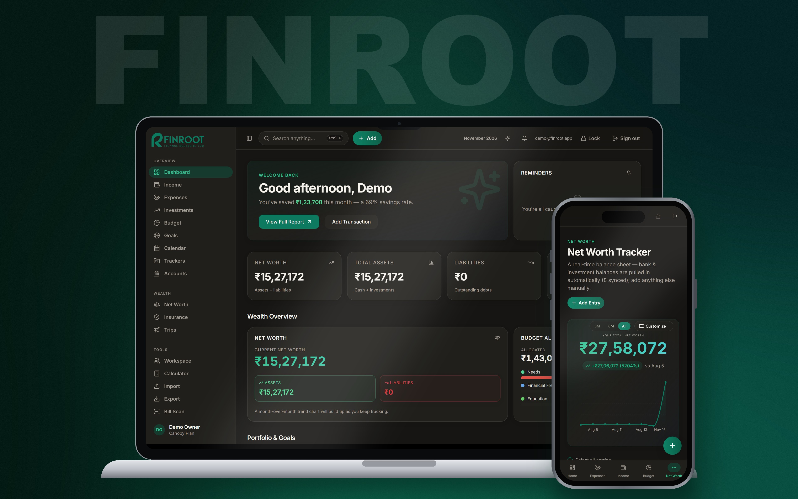
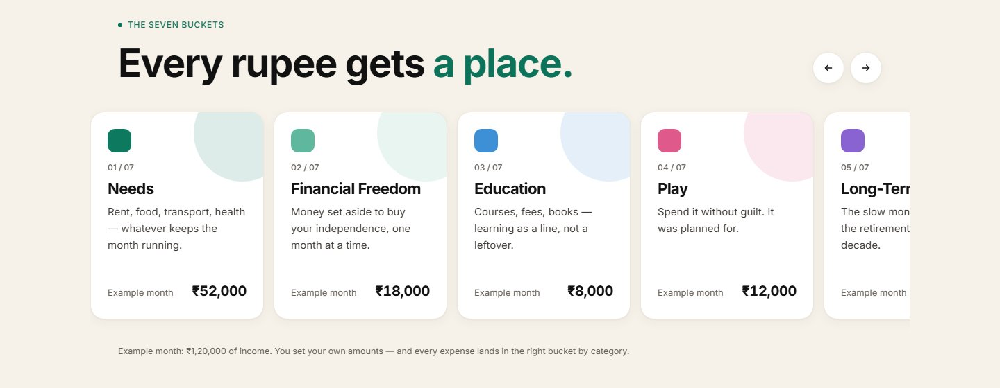
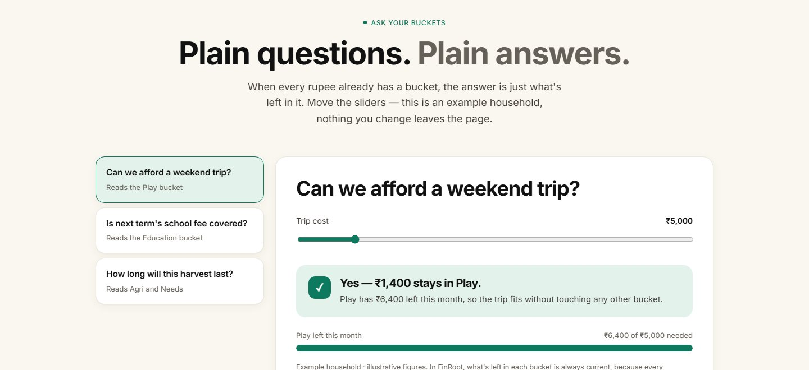
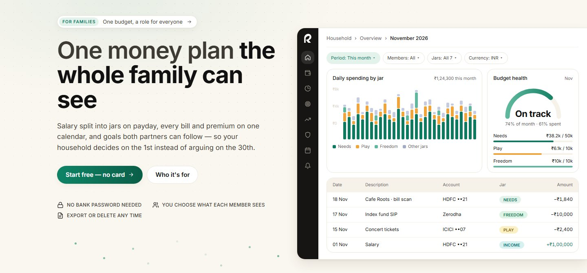
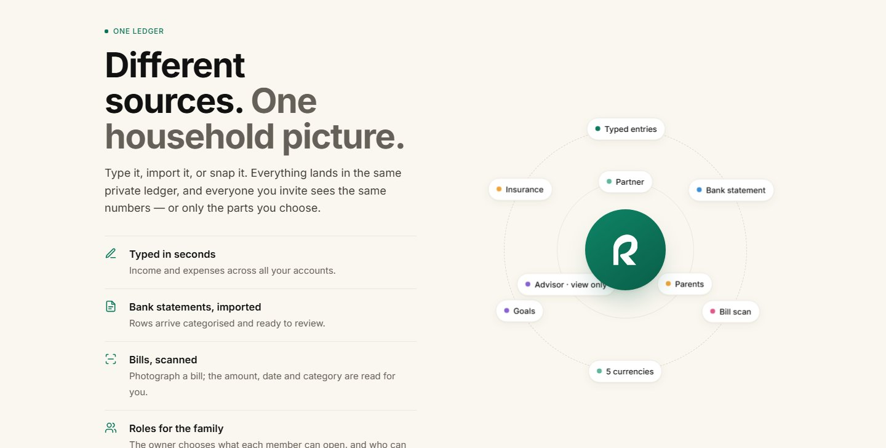
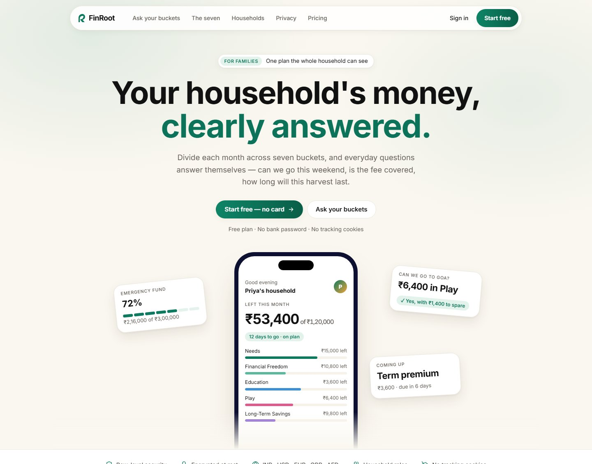

Start from anywhere
A quick-settings tile opens FinRoot's floating card over any app.
Your household's money, clearly answered
Personal finance · web, Windows & AndroidThe idea Split each month across seven buckets, so everyday money questions answer themselves.
One money plan the whole family can see: salary split into buckets on payday, every bill and premium on one calendar, and goals both partners can follow.

FinRoot divides each month across seven buckets. Because every rupee already has a place, everyday questions answer themselves: can we go this weekend, is the school fee covered, how long will this harvest last.
It is built for the person who keeps the household's money on track, and the family members they invite.
A household's money is spread over accounts, bills, policies and people, so a simple "can we afford it?" needs a spreadsheet.
Split the month into buckets on payday and match spending to them automatically, so the answer is just what's left in the right bucket.
Seven jars with your own percentages. The moment salary lands it's divided, and spending is matched to its jar.

Pick a question and move the slider. The answer reads straight from the bucket it belongs to, without touching any other.

Spending by bucket, budget health and one shared ledger, with roles so each member sees only what the owner chooses.

One shared budget both partners trust, with roles that decide who can see and edit what.
Split salary on payday and see what's left in each jar.
Income in five currencies, one net worth in rupees.
An Agri jar for land, seed and equipment, alongside the home budget.
Type it, import it or snap it. Everything lands in the same private ledger: typed entries, bank statements and scanned bills.

On the phone, logging has to be faster than forgetting: a floating quick-add card, a number-pad Quick Log and one sheet for expense, income and transfer.
A quick-settings tile opens FinRoot's floating card over any app.
Amount first, then a category, without leaving what you were doing.
Type ₹15, tap Food, save.
The entry is saved and you're back where you were.
Category tiles, optional subcategory and a big keypad for the amount.
Expense, income or transfer, with category, payment mode, account, date and a note.
From and to, in the light theme.
Bill scan, CSV import, quick entry and recurring rules.
Seven-jar budgets, auto-matching, monthly carry-over and gentle nudges.
An insurance shelf, document vault, renewal reminders and a premium calendar.
Investments, goals, net worth and a weekly digest.
An R mark that grows from a root, the FINROOT wordmark and a calm green for money that should feel safe.

Every page and link here is the sample. The live site is unchanged.